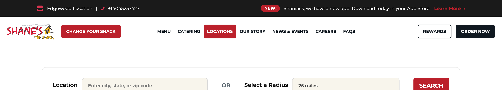
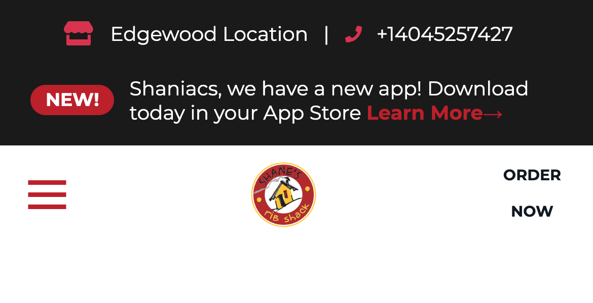
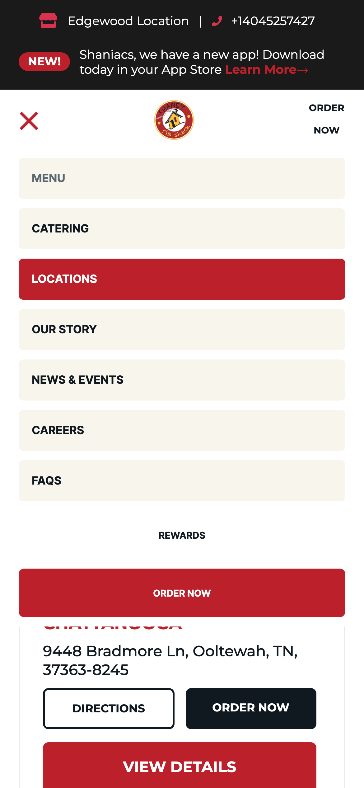

Website review · Find a Shane’s
The red “Change Your Shack” button works on a computer — but on a phone it isn’t shown at all, and it isn’t in the menu either. Customers have to find their way to Locations on their own.
The button sits right next to the logo, on every page.

Change Your Shack — visible
One tap → pick a different Shane’s. Clear and obvious.
Same page, phone screen — the button is gone, and the menu doesn’t include it.

No button here
Hamburger, logo, Order Now. No way to change location from the header.

Not in the menu either
The menu has 9 items. None of them changes your location.
What customers see today
Either one is a small change — no redesign needed.
Show the same red “Change Your Shack” button on phones that computers already get. Most consistent with the desktop site.
Make “Change Your Shack” the first item in the mobile menu, above “Menu”. Smallest visual change.
Checked on a 390 px-wide phone screen — the same width as an iPhone — on the live site, 23 September 2026. Screenshots are unedited.